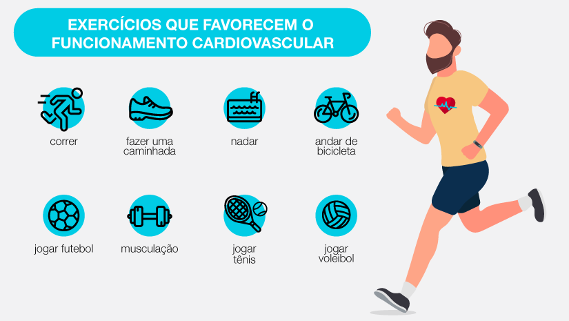
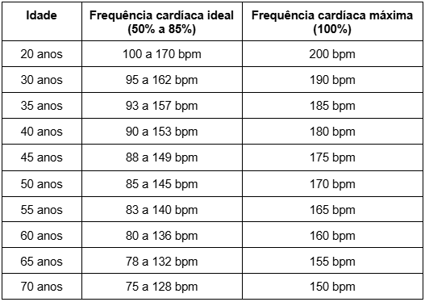
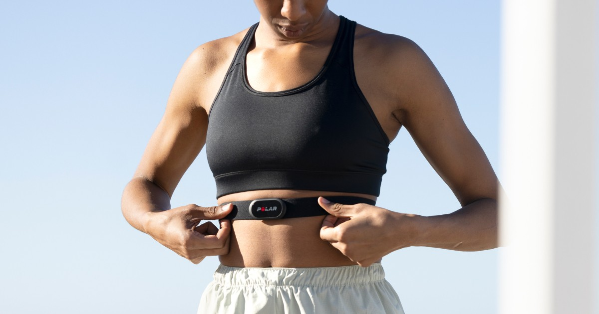

A Importância e os Cuidados do Cardio na Atividade Física
O cardio, também chamado de exercício cardiovascular, é um dos pilares da atividade física e da saúde. Ele engloba práticas que aumentam a frequência cardíaca e respiratória, como caminhada, corrida, ciclismo, natação e aulas aeróbicas. Quando realizado corretamente, o cardio traz inúmeros benefícios; porém, exige cuidados para evitar lesões e sobrecarga.
❤️ Por que o cardio é tão importante?
O exercício cardiovascular atua diretamente no coração, pulmões e sistema circulatório, promovendo melhorias essenciais para o organismo.
Principais benefícios do cardio:
- Fortalece o coração e melhora a circulação sanguínea
- Aumenta a capacidade respiratória
- Auxilia no controle do peso corporal
- Reduz o risco de doenças cardiovasculares
- Melhora a disposição e a qualidade do sono
- Contribui para a saúde mental, reduzindo estresse e ansiedade
A prática regular de cardio também ajuda a controlar pressão arterial, colesterol e glicemia.
🔥 Cardio e emagrecimento
O cardio é um grande aliado de quem busca emagrecer, pois:
- Eleva o gasto calórico
- Estimula o uso da gordura como fonte de energia
- Pode ser praticado com maior frequência
No entanto, para resultados mais completos e duradouros, o ideal é associar o cardio a exercícios de força e a uma alimentação equilibrada.


⏱️ Quanto cardio fazer por semana?
As recomendações mais aceitas indicam:
- 150 a 300 minutos semanais de cardio moderado
- ou
- 75 a 150 minutos semanais de cardio intenso
Esses minutos podem ser divididos ao longo da semana, respeitando a rotina e o nível de condicionamento.
⚠️ Cuidados essenciais ao fazer cardio
Apesar dos benefícios, alguns cuidados são fundamentais:
1. Respeitar a intensidade
Treinar sempre muito forte pode causar:
- Exaustão
- Queda de desempenho
- Aumento do risco de lesões
O ideal é variar entre dias leves, moderados e intensos.
2. Atenção à frequência cardíaca
Controlar os batimentos ajuda a manter o treino seguro e eficiente, especialmente para iniciantes e pessoas com histórico de problemas cardíacos.
3. Aquecimento e desaquecimento
- Aquecimento prepara o corpo
- Desaquecimento ajuda na recuperação
Ignorar essas etapas aumenta o risco de lesões.
💧 Hidratação e alimentação
Durante o cardio, o corpo perde líquidos e sais minerais. Por isso:
- Hidrate-se antes, durante e depois
- Alimente-se de forma adequada para evitar quedas de energia
🛑 Quando evitar ou adaptar o cardio
Pessoas com:
- Problemas cardíacos
- Dores persistentes
- Falta de ar excessiva
Devem procurar orientação médica antes de iniciar ou intensificar o treino.
✅ Conclusão
O cardio é fundamental para a saúde e deve fazer parte de qualquer rotina de atividade física. Quando praticado com orientação, equilíbrio e atenção aos sinais do corpo, ele promove longevidade, bem-estar e melhor desempenho físico.
Mais do que intensidade, o segredo está na regularidade e no cuidado.